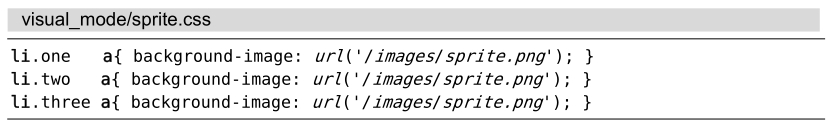
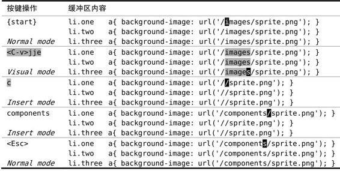

技巧25修改列文本
用列块可视模式可以同时往若干行中插入文本。列块可视模式不仅仅对表格数据有用，在编程时我们也时常受惠于此功能。
例如，对于以下CSS片段：

假设我们已经把文件sprite.png从images/目录移到了components/目录，那么就需要修改每一行的内容，使其指向该文件的新位置。我们可以使用列块可视模式完成此工作，如表4-4所示。
整个过程看起来非常熟悉。先指定想要操作的选区，本例中的高亮选区恰好为方形。当我们按c键时，所有被选中的文本都消失了，同时我们进入了插入模式。
当我们在插入模式中输入单词“components”时，此单词只出现在顶行，下面的两行没什么变化。只有在按了<Esc>返回到普通模式后，我们才看到刚才输入的文本出现在下面这两行里。
在Vim 列块可视模式中，修改命令的表现或许有点怪，它看上去有点不一致。删除操作会同时影响所有被选中的行，但插入操作只影响顶行（至少在处于插入模式的期间）。其他文本编辑器也提供了类似的功能，但是它们会同时更新所有被选中的行，如果你已经习惯了这样的表现（就像我以前一样），那么你会发现Vim的实现不太完美。
表4-4向多行插入文本

不过在实践中，最终的结果没什么区别。因为你处于插入模式的时间很短，所以没必要太过惊讶。